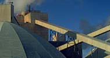
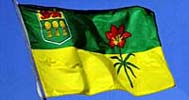

|
Agriculture
|

|
Mining

With a total land area of 570,269 square kilometers, and its northern half biting into the Candian Shield, Saskatchewan is one of the wealthiest regions in natural resource in the world. Uranium and potash are the two top minerals produced from Saskatchewan mines, but did you know that gold, diamonds, salt, coal, oil, natural gas, clays, and other minerals are hiding just below the surface. Find out where in this section.
Tourism

With more outdoor activities than anywhere else in Canada, Saskatchewan is the land of nature, wildlife and beauty. Experience virtual reality technology as you transcend time, space, and season. Explore spectacular settings through the concept of Virtual Field Trips (VFT).
Visit the resting place of Scotty the Tyranosaurus Rex. Did you know that sixty-five million years ago, Saskatchewan was home to the most ferocious beast to ever walk the face of the earth? See "Mystery Rocks"; are they just a strange joke played by nature or were they really placed here by intelligent alien lifeforms?
Facts and Figures
How big is Saskatchewan? How many farms are there? How many people are there? What is our ethic mix? For all the latest statistics, projections and trivia, check out this section.
Help
Something not working correctly? Are you not seeing the Quicktime VR images? Having trouble finding your way around? Check here for most of the answers...
Site Requirements
If this is your first visit to our website or CD, ensure that you are using a version 4.0+ browser (with QuickTime 3.0 Plugin). We recommend Netscape Navigator 4.x for the PC and Microsoft Explorer 4.x for the Mac (runs faster than Netscape). If your system is not already configured with this software, please access this section for easy to follow instructions.
Since font size is controlled by the user, you will need to decrease or increase your browser's font size (under the Browser's preferences or toolbar) so that the centre line on this page is the correct length. PC users should select Times Roman 10 point, Mac users Times Roman 14. Monitors should be set to display at least thousands of colours (millions preferred)
Credits
The broad scope and diverse nature of the Saskatchewan Interactive project has required a collaborative effort by government, industry, academia, artists, and private citizens. We thank, in particular the College of Agriculture and the summer students who helped to get this project underway.
The GlobalEd team would like to thank everyone for their support and participation.

|